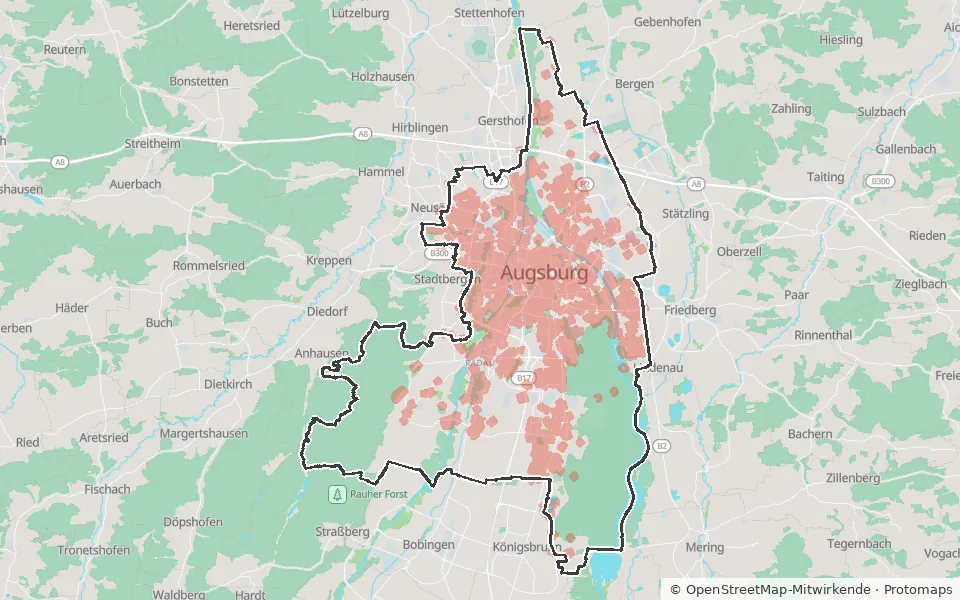
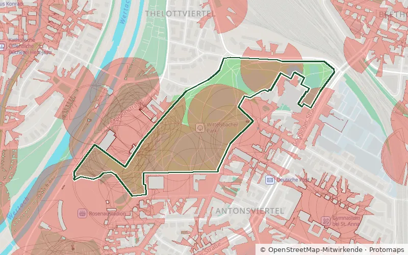
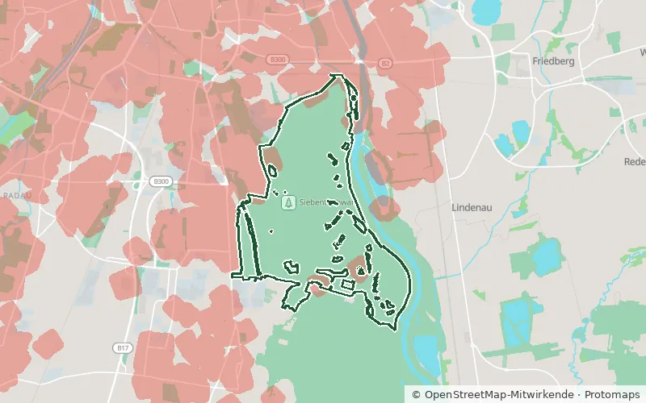
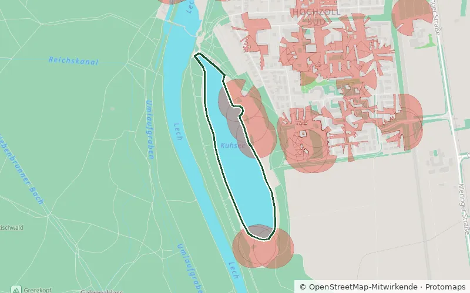
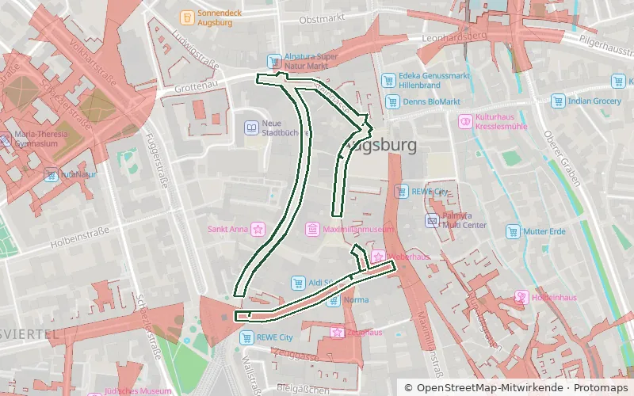
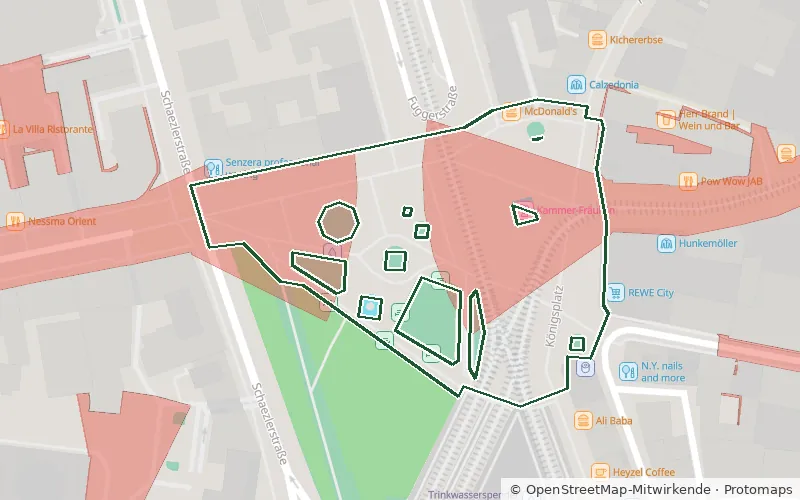
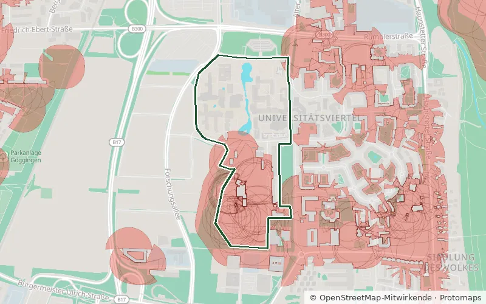

In Augsburg ist öffentliches Kiffen auf 23 km² verboten, das sind 15,8 % der Stadtfläche von 147 km². Grund sind 1 858 Einrichtungen wie Schulen und Spielplätze: In ihrer Sichtweite, bis 100 Meter vom Eingang und ohne Gebäude dazwischen, verbietet § 5 KCanG den Konsum. Dazu kommen die Fußgängerzonen von 7 bis 20 Uhr, der Friedensplatz in Oberhausen und überall die Gegenwart von Minderjährigen.
Ein gutes Viertel der Stadt ist Wald, vom Siebentischwald bis zum Haunstetter Wald (27 % der Stadtfläche), und dort liegt kaum eine Zone; ohne den Wald gerechnet sind es 20,2 %. In Bayern ist gerauchtes Cannabis außerdem in Biergärten, auf Volksfesten wie dem Plärrer und auf dem Gelände von Spielplätzen, Schulen und Kitas verboten (siehe Landesrecht in Bayern).

Woher die Zonen in Augsburg kommen
| Einrichtung | Anzahl | Zonenfläche |
|---|---|---|
| Schulen | 115 | 4,2 km² |
| Kitas und Kindergärten | 153 | 3,6 km² |
| Kindertagespflege | 21 | 0,5 km² |
| Spielplätze | 626 | 8,4 km² |
| Kinder- und Jugendeinrichtungen | 54 | 0,9 km² |
| Sportstätten | 889 | 13,1 km² |
Jede Art für sich gezählt, Überlappungen also mehrfach. Anbauvereinigungen nur, soweit in OpenStreetMap eingetragen.
Die meisten Zonen gehen auf die 889 Sportstätten zurück, danach auf die 626 Spielplätze. Auf Spielplätzen verbietet die Grünanlagensatzung der Stadt außerdem Rauchen und Alkohol (Grünanlagensatzung).
Friedensplatz Oberhausen
Auf dem Friedensplatz in Oberhausen ist Cannabis seit Mai 2026 rund um die Uhr verboten, in jeder Form: Die Stadt hat es in der Benutzungssatzung für das Forum St. Johannes festgelegt, zu dem der Platz gehört; ein Verstoß kostet bis zu 2.500 Euro (Satzung). Auf der Karte steht der Platz lila unter den örtlichen Verboten. Der Helmut-Haller-Platz in Oberhausen liegt zu 14 % in einer Sichtweiten-Zone.
Parks und Lech
Im Wittelsbacher Park liegen 84 % der Fläche in einer Zone: Sechs Spielplätze liegen im Park, rundherum die Sportanlagen am Rosenaustadion. Der Hofgarten liegt außerhalb jeder Zone (0 %).

Im Siebentischwald liegt kaum eine Zone (4 %), vor allem an seinen Rändern. Am Kuhsee liegen 22 % der Wasserfläche in einer Zone; auf einem 100 Meter breiten Streifen Land entlang von Lech und Wertach sind es 22 %.


Innenstadt
Die Fußgängerbereiche der Altstadt hat die Stadt 2025 im Amtsblatt aufgezählt: Annastraße, Fuggerplatz, Martin-Luther-Platz, Philippine-Welser-Straße, Steingasse, Welserplatz und Teile von Ludwigstraße und Rathausplatz (Amtsblatt, Juni 2025). Die Maximilianstraße ist keine Fußgängerzone; den Versuch dazu hat das Verwaltungsgericht 2023 gestoppt (VG Augsburg). In den Fußgängerzonen gilt von 7 bis 20 Uhr Konsumverbot; blau sind die Fußgängerbereiche aus OpenStreetMap.
Von Annastraße, Bürgermeister-Fischer-Straße, Philippine-Welser-Straße und Steingasse liegen außerdem 26 % in einer Sichtweiten-Zone, vom Rathausplatz 14 %. Der Königsplatz liegt zu 53 % in einer Zone, der Moritzplatz zu 67 %; der Stadtmarkt liegt außerhalb (0 %).


Universität, Stadion und Plärrer
Hochschulen sind nach § 5 KCanG keine Verbotsorte. Auf dem Campus der Universität liegen 40 % in einer Zone, um rund 40 Sportanlagen und zwei Kitas. In der WWK Arena verbietet die Stadionordnung den Konsum von Cannabis (Stadionordnung).

Der Plärrer ist ein Volksfest: Gerauchtes Cannabis ist dort nach Landesrecht verboten. Der Christkindlesmarkt ist rechtlich ein Markt; er liegt am Rathausplatz, also tagsüber ohnehin in der Fußgängerzone.
Was sonst noch in Augsburg gilt
Bayern hat feste Bußgelder: Konsum in einer Verbotszone nach § 5 KCanG, auch in der Fußgängerzone, kostet 500 Euro, in Gegenwart von Kindern und Jugendlichen 1.000 Euro (Bußgeldkatalog Bayern). Das Gesundheitsschutzgesetz verbietet, Cannabis zu rauchen, zu erhitzen oder zu verdampfen: in Biergärten, auf Volksfesten und auf dem Gelände von Spielplätzen, Schulen und Kitas, bis zu 1.500 Euro (Gesundheitsschutzgesetz).
Häufige Fragen zu Augsburg
Wo darf man in Augsburg kiffen?
Nach § 5 KCanG außerhalb der roten Flächen, etwa im Siebentischwald (4 % in einer Zone) und im Hofgarten. Nicht auf dem Friedensplatz in Oberhausen, tagsüber nicht in den Fußgängerzonen, nie in Gegenwart von Minderjährigen, gerauchtes Cannabis außerdem nicht in Biergärten und auf Volksfesten. Weiß heißt nicht sicher erlaubt: Hecken, Bäume und fehlende Einrichtungen kennt die Karte nicht.
Wie genau ist das?
Täglich aus OpenStreetMap gerechnet, mit Gebäuden als Sichthindernis; die Zahlen hier sind vom 27. November 2026. Eine Orientierungshilfe, keine Rechtsauskunft (wie gerechnet wird).
Fehlt eine Einrichtung? Korrekturen in OpenStreetMap stehen am Tag darauf auf der Karte; bitte nur eintragen, was es vor Ort gibt.